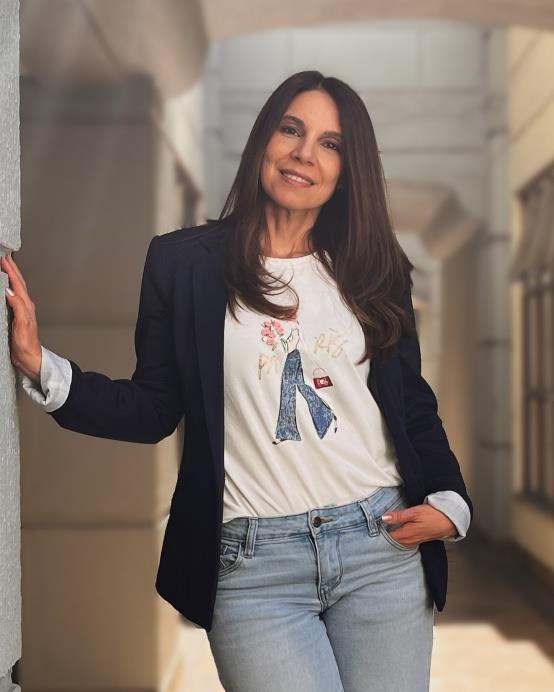
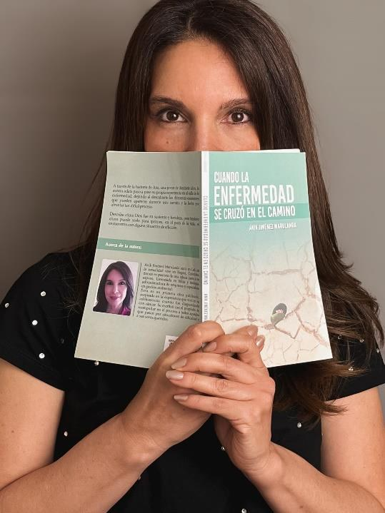

Biografía

Bogotá, Colombia
Anik Jiménez Marulanda, escritora colombiana radicada en Bogotá, es licenciada en Biblia y Teología, administradora de empresas y cuenta con estudios en escritura creativa.
Durante su infancia en Cuba nació su amor por la literatura y el sueño de convertirse en autora. En 2020 publicó su primer libro, Cuando la enfermedad se cruzó en el camino, y en 2023 participó con su obra en la Feria Internacional del Libro de Bogotá.
Tras enfrentar múltiples diagnósticos y cirugías relacionadas con el cáncer, escribió su segunda obra, Las cicatrices que aprendí a amar, en la que comparte, desde una voz cercana y acompañada por su fe en Dios, las enseñanzas de este proceso y herramientas para pacientes oncológicos, cuidadores y familiares.
Anik está convencida de que cada experiencia puede tener un propósito y busca transformar sus aprendizajes en palabras que inspiren, acompañen y alumbren el camino de quienes atraviesan situaciones similares.
Valores
Fe
Confiar en Dios como fuente de propósito, esperanza y fortaleza.
Compasión
Mirar el dolor humano con sensibilidad, amor y sin juzgar.
Autenticidad
Escribir desde la verdad, la experiencia y una voz propia.
Empatía
Conectar con las historias y emociones de los demás desde la comprensión.
Resiliencia
Transformar las dificultades en aprendizaje, crecimiento y nuevas oportunidades.
Servicio
Poner las palabras al servicio de quienes necesitan inspiración y compañía.

Misión
Crear, a través de diversos géneros literarios, historias que inspiren y acompañen a las personas en su caminar, compartiendo desde la experiencia de vida y la fe en Dios una mirada de esperanza, resiliencia y sentido ante la existencia.
Visión
Consolidarse como una voz literaria versátil y auténtica, capaz de explorar con honestidad y sensibilidad las profundidades del corazón humano, abordando la fe, el dolor, el amor, la esperanza y la fortaleza interior.